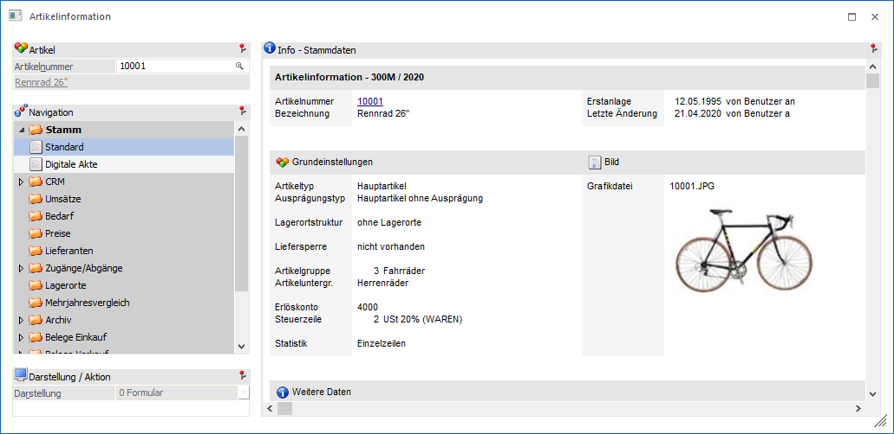
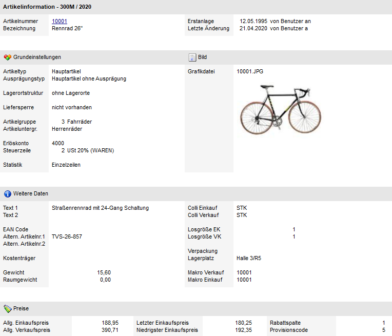
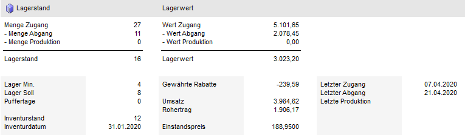
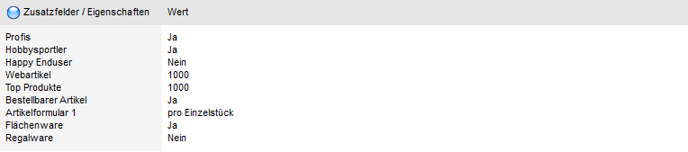
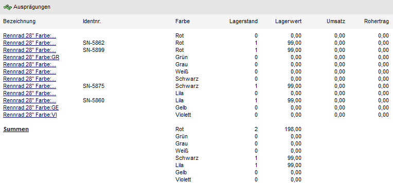

In der Ansicht "Standard" werden die Stammdaten des Artikels dargestellt.

Info - Stammdaten
Die Anzeige des Bereichs "Info - Stammdaten" ist in die folgenden Datenbereiche unterteilt:
Ø Info
Es werden die wichtigsten Informationen aus dem Artikelstamm des Artikels angezeigt.

Ø Lagerstand / Lagerwert
In diesem Datenbereich werden die Werte des Lagerstamms angezeigt.

Ø Zusatzfelder / Eigenschaften
Es werden die 30 Zusatzfelder und die Eigenschaften aus dem Register "Zusatz" des Artikelstamms angezeigt.

Ø Ausprägungen
Handelt es sich bei dem Artikel um einen Artikel mit Ausprägungen, so werden diese ebenfalls im Infofeld angezeigt.

Im Anschluss an die Ausprägungen wird (sofern eine 2. Ausprägung und / oder Charge / Ident verwendet wird) eine Summe pro Ausprägung angezeigt.
Hinweis
Im Programm "Einstellungen" (WinLine INFO - Einstellungen - Register "Artikelinformation" - Bereich "Anzeige der Ausprägungen") kann die maximale Anzahl der anzuzeigenden Ausprägungen definiert werden.